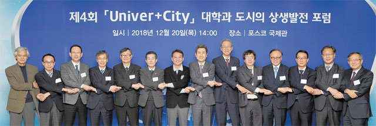
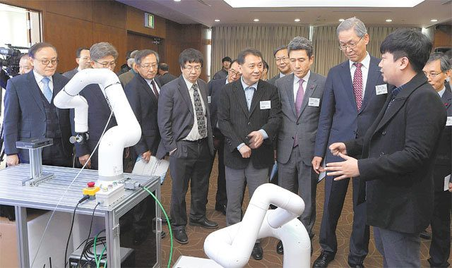

매체 동아일보보도일 2018-12-21
‘제4회 유니버+시티(Univer+City) 포럼’ 20일 포항서 열려
0일 포스텍에서 열린 제4회 ‘유니버+시티’ 대학과 도시의 상생발전 포럼에 참석한 지방자치단체장들과 대학총장 등이 손을 맞잡고 상생을 다짐하고 있다. 포스텍 제공
대학과 도시의 상생 발전을 모색하는 ‘제4회 유니버+시티(Univer+City) 포럼’이 20일 경북 포항시 포스텍(POSTCH) 포스코 국제관에서 열렸다.
‘해오름동맹’을 맺고 있는 울산, 포항, 경주 지역의 시청과 상공회의소 등이 2016년 선포식을 가지며 첫선을 보인 ‘유니버+시티’는 대학과 지방자치단체, 기업이 협력해 도시의 경제 체질을 근본적으로 바꿔 지속 가능한 발전을 이뤄내는 프로젝트다.
현재 여기에는 포항시, 울산시, 경주시, 포스텍, 울산대, 울산과학기술원(UNIST), 동국대 경주캠퍼스, 위덕대, 한동대, 포항상공회의소, 울산상공회의소, 경주상공회의소 등이 참여하고 있다.
○ 대학총장-지자체장 “상생 협력
제4회 ‘유니버+시티’ 대학과 도시의 상생발전 포럼에서 김도연 포스텍 총장, 이강덕 포항시장, 이광재 여시재 원장(오른쪽에서 두 번째부터) 등 참석자들이 포항지역 기업들의 기술성과에 대해 설명을 듣고 있다. 포스텍 제공
이날 포럼에는 해오름동맹 소속 지방자치단체장과 대학총장 등을 포함해 관계자 200여 명이 참석했다.
이대원 동국대 경주캠퍼스 총장은 개회사를 통해 “지자체와 대학이 해오름동맹을 맺고 상생발전과 경제적 가치 창출을 위해 노력하고 있다”며 “지역 산업 발전과 경제적 효과 창출이 공동 목표”라고 말했다.
이강덕 포항시장은 “포항, 울산, 경주로 이어지는 동해안 산업벨트가 지역 산업 침체로 과거 대한민국 발전에 중요한 역할을 했던 기억에 금이 갈 정도로 힘든 상황이다”며 “이런 상황에서 해오름동맹은 대학과 도시의 상생발전 모델이 될 정도의 연합을 하고 있다”고 말했다.
유니버+시티를 처음 제안했던 김도연 포스텍 총장은 “대학과 도시가 힘을 합쳐야 한다는 인식이라도 확산해야 한다는 생각에 시작한 유니버+시티가 이제 첫걸음을 디딘 것 같다”며 “대학과 도시가 힘을 합쳐 조금씩 성과를 이뤄나가면 10년 후면 많은 것이 달라질 것이라고 생각한다. 그런 의미에서 이 포럼은 작지만 의미 있는 일이다”고 강조했다.
송병기 울산시 경제부시장은 “유니버+시티는 도시의 미래가 대학에 있다는 데 동의하고 뜻을 모은 결과로 다양한 사업들이 진행되면서 내실이 쌓여가고 있다”며 “유니버+시티 포럼이 새로운 미래로 가는 의미 있는 일이 되도록 대학과 더욱 협력하겠다”고 말했다.
기조발표를 한 재단법인 여시재(與時齋)의 이광재 원장은 “국력은 경제력에서 나오고 경제력은 기술력에서 나오고 기술력은 교육에서 나온다”며 “이것이 바로 도시와 대학, 기업의 협력하는 시산학(市産學) 시스템이 핵심이 돼야 하는 이유”라고 말했다. 이 원장은 “일자리는 기업에서 나오는데 기술력이 없으면 새로운 것이 나오지 않는 만큼 기업은 새로운 지식, 상상력을 공급하는 대학이 필요하다”며 “기업은 인재가 있어야 모이는데 인재를 배출하는 포스텍이 살아야만 포항시도 산다”고 강조했다.
○ 지역 기업 살리기
‘포스텍의 포항시-기업 상생협력 프로그램’이라는 제목의 주제 발표를 한 심재윤 포스텍 산학처장은 “포항시, 포스코, 포항산업과학연구원, 포항테크노파크 등과 함께 ‘테크노 파트너십(맞춤형 중소기업 기술지원)’을 운영하고 있다”고 소개했다. 테크노 파트너십은 600여 명의 박사급 연구 인력으로 구성된 중소기업 기술자문단이 매달 한 차례 이상 포항 지역의 중소기업을 직접 방문해 무상 기술 지원 활동을 펼치는 기술협력 프로그램이다.
심 처장은 “테크노 파트너십 협약을 채결하고 기술 자문을 요청한 중소기업은 현재 37곳”이라며 “이들 중소기업은 그동안 전문 인력이나 기술, 장비 부족으로 겪었던 문제점을 해결하고, 기술 경쟁력을 크게 높이는 성과를 보이고 있다”고 말했다. 실제 포스코 기계부품 공급회사인 성진E&I는 테크노 파트너십을 통해 기술자문 31건과 시험분석 13건을 지원 받았다.
‘울산 지역사회 및 산업경쟁력 기여 방안’을 제목으로 주제 발표를 한 신현석 UNIST 대외협력처장은 “울산시의 지원을 받아 지역 기업들의 기술혁신과 글로벌 시장 진출을 지원하는 기업혁신센터를 운영하고 있다”며 “기업혁신센터는 수요 기술을 개발하고, 애로 기술을 지원하는 것은 물론이고 사업화 유망기술에 대한 정보, 마케팅 전략 수립, 해외 거래처 발굴까지 폭넓은 영역에서 지원활동을 하고 있다”고 설명했다.
기술혁신센터는 기업과 교수 간의 일대일 연결을 통해 연구 정보를 공유하고, 기업지원 전담 창구도 운영하고 있는데 지금까지 기업 80곳을 대상으로 기업에서 의뢰한 기술개발 과제 2건과 애로기술에 대한 자문 25건을 진행했다.
신 처장은 “UNIST는 혁신적 원천기술을 기반으로 한 ‘수출형 연구 브랜드’ 사업을 추진하고 있다”며 “대학이 파급력 있는 연구 브랜드를 육성해 새로운 산업을 창출하도록 지원하는 사업으로 지금까지 14개의 연구 브랜드를 선정해 육성하고 있다”고 말했다.
이재신 울산대 산학지원단 부단장은 ‘대학-지자체 상생 발전을 위한 울산대의 노력’이라는 주제 발표를 통해 “지역의 기업임원, 대학교수 출신 은퇴자로 구성된 울산전문경력인사지원센터와 협력해 지역의 중소기업을 상대로 컨설팅 지원을 하고 있다”며 “기업의 생산현장에서 발생하는 품질개선 애로 사항을 집중 컨설팅을 통해 해결해주고 있는데 지금까지 8개 기업에서 2억6500만 원의 비용 절감 효과를 거뒀다”고 말했다.
○ 지역 성장 토대 마련
이 부단장은 “울산시는 울산대, UNIST 등과 함께 울산 테크노 산업단지 안에 산학융합지구를 조성해 ‘울산의 실리콘밸리’로 육성하고 있다”고 소개했다. 산학융합지구에는 울산대의 첨단소재공학부 등 3개 학과 학생 700여 명과 UNIST의 제어설계공학과 등 6개 학과 학생 200여 명이 정부출연연구소, 40여 개의 기업연구소와 협력해 산업 현장에서 곧바로 사용할 수 있는 기술을 연구개발하고 있다. 산학융합지구에 캠퍼스를 둔 대학들은 테크노 산업단지에 입주한 신재생 에너지, 첨단융합 부품, 정밀화학, 수송기계, 지식산업센터 분야의 혁신기업 67곳이 제시하는 다양한 산학과제도 수행하고 있다.
이 부단장은 “산학융합지구 내 대학의 학생과 연구원들은 풍부한 현장 경험을 통해 역량을 강화할 기회를 얻고, 기업들은 우수한 인력을 유치하는 선순환 구조를 만들어 가고 있다”고 말했다. 울산시 발표에 따르면 테크노 산업단지의 생산유발 효과는 2조6000억 원, 고용유발 효과는 2만4000여 명으로 울산의 혁신성장을 선도하고 일자리 창출에 크게 기여할 것으로 기대된다는 것.
심 처장은 “포스텍도 포항시와 함께 ‘스마트 시티’ 사업을 본격화하고 있다”며 “세계적인 첨단과학연구소, 기관이 밀집한 남구의 ‘지곡밸리’ 일대를 스마트시티로 조성하려는 계획을 구체화하고 있다”고 말했다.
포스텍은 이에 맞춰 미래도시 구축을 위한 연구와 협력을 전담하는 ‘미래도시 연구센터’를 만들어 캠퍼스가 있는 지곡지구에서 생성된 각종 데이터를 공개해 창업 활동과 연결하고, 스타트업의 신기술들을 테스트해 볼 수 있는 공간으로 캠퍼스를 활용하고 있다.
심 처장은 “데이터와 도시 관련 연구 결과를 기업이나 지역에서 태어난 스타트업 등과 공유하면서 미래도시 관련 첨단 산업 클러스터를 조성하려는 것이 포스텍의 지향점”이라고 밝혔다.
포스텍은 포항시와 함께 이미 포항시청사와 포항역 이전으로 방문객이 감소하고 있는 포항시 중앙동 일대를 스마트시티로 재생시키는 프로젝트를 통해 교통수단 개선과 도심의 활기를 되찾을 방안을 마련해 발표했다.
○ “중앙정부의 지원 절실”
주제 발표에 이어 진행된 종합토론에서 참가자들은 유니버+시티의 확산을 위해서는 중앙정부의 더 큰 관심과 지원이 필요하다고 지적했다. 대학과 지방자치단체 모두 재정이 힘든 상황에서 대학과 도시가 상생하려는 의지가 있어도 이를 뒷받침해줄 예산이 부족하기 때문이다.
김승환 포스텍 박태준미래전략연구소장은 “대학과 도시가 상생해 도시의 재생을 이끌어 세계의 주목을 받은 핀란드의 말뫼시의 경우 중앙정부의 대규모 재정지원이 큰 힘이 됐다”며 “재정상태가 열약한 국내 지자체가 지역 대학들과 상생하려면 중앙정부의 지원이 뒷받침돼야 한다”고 말했다.
대학의 자원을 공유하기 위해 대학의 담장을 없애는 더 많은 노력이 필요하다는 주장도 있었다. 권혁원 포항시 정책기획관은 “산업체와 함께 원천기술을 개발하는 것은 물론 대학들이 다양한 콘텐츠를 지역 시민과 공유해야 한다”고 말했다.
[출처]
동아일보, 포항=이현두 기자
ruchi@donga.com
, “
싹트기 시작한 대학-지자체 상생협력… 중앙정부가 뒷받침해야
” _ 2018-12-21

